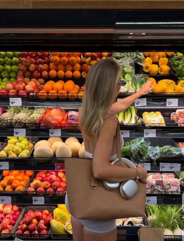
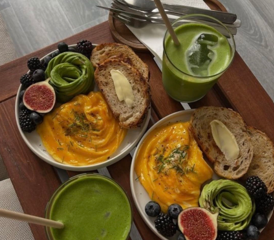
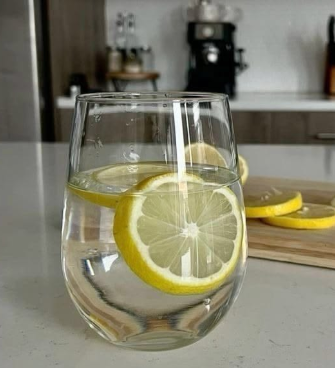
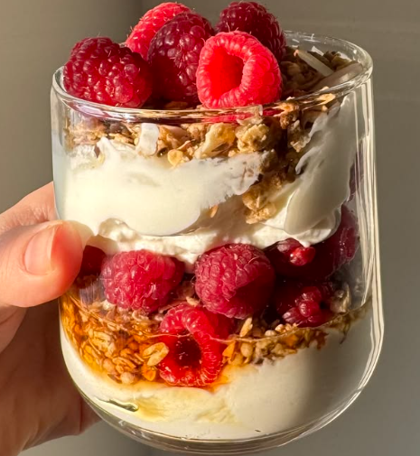

Сбалансированное питание — это не жесткая диета и не система строгих запретов. Это рацион, который обеспечивает организм всеми необходимыми питательными веществами для нормальной работы, роста и восстановления клеток. При таком подходе человек получает ровно столько энергии, сколько тратит, без риска набора лишнего веса или истощения. Главный принцип баланса — это разнообразие. Чем больше разных продуктов присутствует в вашем ежедневном меню, тем меньше вероятность столкнуться с дефицитом витаминов и минералов.
Основу любого сбалансированного рациона составляют макронутриенты: белки, жиры и углеводы. Белки являются главным строительным материалом для мышц, кожи и гормонов. Жиры необходимы для усвоения жирорастворимых витаминов и здоровья нервной системы, а сложные углеводы дают нашему телу энергию на весь день. Важно не исключать эти элементы, а следить за их качеством и правильными пропорциями. Например, отдавать предпочтение растительным жирам и цельнозерновым крупам вместо рафинированных продуктов.

Не стоит забывать и о микронутриентах — витаминах и минералах. Они не дают энергии, но участвуют в сотнях биохимических реакций. Витамин C поддерживает иммунитет, кальций укрепляет кости, а магний помогает бороться со стрессом. Все эти элементы мы получаем из свежих овощей, зелени, ягод, орехов и качественных источников белка. Именно поэтому так важно следить за цветом своей тарелки: чем она ярче и разнообразнее, тем богаче ее химический состав.
Самый простой способ собрать правильный прием пищи — воспользоваться принципом «Гарвардской тарелки». Визуально разделите свою тарелку на четыре части. Половину должны занимать овощи и фрукты — они дают объем, клетчатку и витамины. Четверть тарелки отводится под сложные углеводы, такие как гречка, бурый рис или киноа. Оставшаяся четверть — это белковая часть: рыба, мясо, яйца или бобовые. Такой подход позволяет без калькулятора и сложных формул поддерживать баланс питательных веществ в каждом приеме пищи.

Также сбалансированное питание невозможно представить без достаточного количества воды. Она ускоряет метаболизм и помогает выводить токсины. Ориентируйтесь на чувство жажды и пейте чистую воду в течение дня, а не только тогда, когда организм уже сильно обезвожен.

И последнее, но не менее важное: еда должна приносить удовольствие. Сбалансированный рацион оставляет место для любимых лакомств. Пара долек шоколада или кусок пиццы на выходных не разрушат ваше здоровье, если это не становится ежедневной привычкой. Здоровое питание — это про свободу чувствовать себя лучше, а не про страх перед едой. Прислушивайтесь к сигналам своего тела, выбирайте качественные продукты и не забывайте, что устойчивая привычка формируется постепенно.
Помните, что переход к сбалансированному питанию — это марафон, а не спринт. Внедряйте новые привычки по одной: сначала добавьте овощи к ужину, затем замените белый хлеб на цельнозерновой, и постепенно вы заметите, как улучшилось ваше самочувствие, появилась энергия и стабильное настроение.